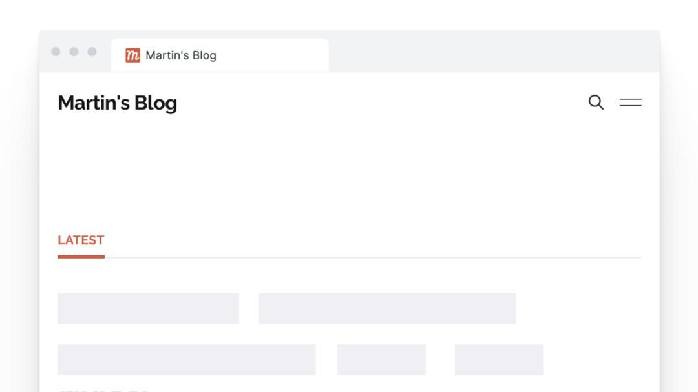
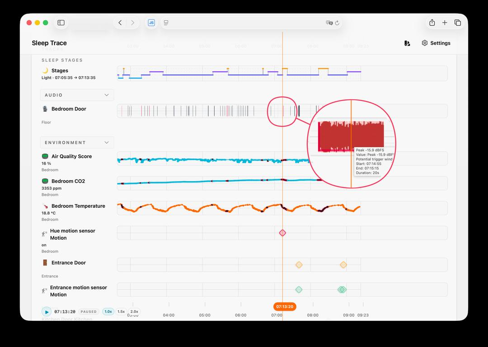

Martin sering terbangun jam 3 pagi tanpa tahu penyebabnya. Kadang tidak sadar, tapi smartwatch-nya menunjukkan ada yang menariknya keluar dari tidur nyenyak.
Tanpa tahu penyebab, perbaikan hanya tebakan mahal. "Was it inside? Outside? A neighbor? A truck?"
Martin sudah punya Home Assistant dengan sensor:
Data tidur dari Garmin watch — cukup akurat untuk deteksi kebangkitan.
Raspberry Pi dengan USB microphone mendeteksi suara keras dan merekam klip pendek dengan konteks sebelum & sesudah.

"Yang dulu terlalu berat untuk payoff, sekarang bisa weekend." — Martin
AI coding agent punya SSH ke Raspberry Pi, test langsung: minta Martin teriak, jatuhkan barang, atau nyalakan keran. Iterasi jadi cepat & seru.
Dengan data nyata, pola langsung terlihat:
Tidak lagi menebak. Bisa bertindak dengan percaya diri.
Martin pasang insulasi jendela & pintu. Perbedaan terasa — pagi lebih segar, data Garmin juga membaik.
"AI tidak menyelesaikan masalah saya — AI menurunkan biaya membangun alat yang membiarkan saya menyelesaikan masalah saya sendiri."
Banyak masalah kecil yang dulu "sayang dibuat" sekarang jadi "boleh dicoba." Itulah yang berubah.
python scripts/carousel-capture.py